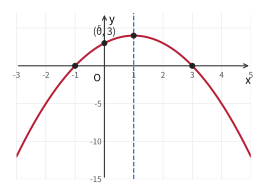
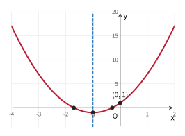
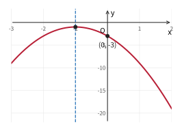

別冊練習問題 9 の解答 グラフから係数・判別式の符号を読む
(1) \(y=- x^{2} + 2 x + 3\) のグラフについて、\(a,\ b,\ c,\ b^2-4ac\) の符号をそれぞれ答えよ。
開き方・軸・切片から符号
上に凸なので \(a<0\)。切片 \(c=3\) より \(c>0\)。
グラフの形：点線が軸、赤い曲線が放物線。

軸の位置から \(b\)
軸 \(x=-\dfrac{b}{2a}=1\) は右側。\(a<0\) なので \(b>0\)。
判別式から
\(x\) 軸との交点が2個なので \(b^2-4ac>0\)。
【答案】
\[a:負, b:正, c:正, b^2-4ac:正\]答
(2) \(y=2 x^{2} + 4 x + 1\) のグラフについて、\(a,\ b,\ c,\ b^2-4ac\) の符号をそれぞれ答えよ。
開き方・軸・切片から符号
下に凸なので \(a>0\)。切片 \(c=1\) より \(c>0\)。
グラフの形：点線が軸、赤い曲線が放物線。

軸の位置から \(b\)
軸 \(x=-\dfrac{b}{2a}=-1\) は左側。\(a>0\) なので \(b>0\)。
判別式から
\(x\) 軸との交点が2個なので \(b^2-4ac>0\)。
【答案】
\[a:正, b:正, c:正, b^2-4ac:正\]答
(3) \(y=- 2 x^{2} - 4 x - 3\) のグラフについて、\(a,\ b,\ c,\ b^2-4ac\) の符号をそれぞれ答えよ。
開き方・軸・切片から符号
上に凸なので \(a<0\)。切片 \(c=-3\) より \(c<0\)。
グラフの形：点線が軸、赤い曲線が放物線。

軸の位置から \(b\)
軸 \(x=-\dfrac{b}{2a}=-1\) は左側。\(a<0\) なので \(b<0\)。
判別式から
\(x\) 軸との交点が0個なので \(b^2-4ac<0\)。
【答案】
\[a:負, b:負, c:負, b^2-4ac:負\]答